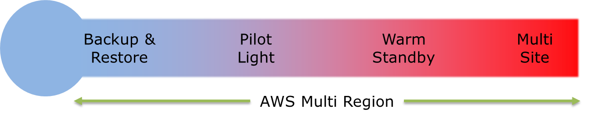

Test Report
Review questions
Jun 17, 2019 02:40AM EDT
 16 correct
16 correct 49 incorrect
49 incorrectYour answer
B. Add a scaling-specific cooldown period to the scaling policy
C. Adjust the CPU threshold that triggers a scaling action
D. Attach a new launch configuration to the Auto Scaling group
Correct answer is B as you need to adjust the cool down period for the newly added instance to startup and handle traffic.
Refer AWS documentation - Auto Scaling Cooldowns
The Auto Scaling cooldown period is a configurable setting for your Auto Scaling group that helps to ensure that Auto Scaling doesn't launch or terminate additional instances before the previous scaling activity takes effect. After the Auto Scaling group dynamically scales using a simple scaling policy, Auto Scaling waits for the cooldown period to complete before resuming scaling activities. When you manually scale your Auto Scaling group, the default is not to wait for the cooldown period, but you can override the default and honor the cooldown period. If an instance becomes unhealthy, Auto Scaling does not wait for the cooldown period to complete before replacing the unhealthy instance.
Your answer
B. Amazon Kinesis Firehose
C. Amazon DynamoDB Streams
D. Amazon Elasticsearch Service
Correct answer is B as Kinesis Firehose can help in the reliable data ingestion with least management.
Refer AWS documentation - Kinesis Firehose
Amazon Kinesis Data Firehose is a fully managed service for delivering real-time streaming data to destinations such as Amazon Simple Storage Service (Amazon S3), Amazon Redshift, Amazon Elasticsearch Service (Amazon ES), and Splunk. Kinesis Data Firehose is part of the Kinesis streaming data platform, along with Kinesis Data Streams, Kinesis Video Streams, and Amazon Kinesis Data Analytics. With Kinesis Data Firehose, you don't need to write applications or manage resources. You configure your data producers to send data to Kinesis Data Firehose, and it automatically delivers the data to the destination that you specified. You can also configure Kinesis Data Firehose to transform your data before delivering it.
Your answer
B. Develop each app in a separate Docker container and deploy using CloudFormation
C. Develop each app in one Docker container and deploy using Elastic Beanstalk
D. Develop each app in a separate Docker container and deploy using Elastic Beanstalk
Correct answer is D as with Elastic Beanstalk each application can be deployed as a separate Docker container.
Refer AWS documentation - Elastic Beanstalk Create Deploy Docker
Elastic Beanstalk supports the deployment of web applications from Docker containers. With Docker containers, you can define your own runtime environment. You can choose your own platform, programming language, and any application dependencies (such as package managers or tools), that aren't supported by other platforms. Docker containers are self-contained and include all the configuration information and software your web application requires to run.
By using Docker with Elastic Beanstalk, you have an infrastructure that automatically handles the details of capacity provisioning, load balancing, scaling, and application health monitoring. You can manage your web application in an environment that supports the range of services that are integrated with Elastic Beanstalk, including but not limited to VPC, RDS, and IAM.
Your answer
B. Use Amazon EBS for regular storage and Amazon S3 for archiving data.
C. Use Amazon S3 for regular storage and Amazon Glacier for archiving data.
D. Use Amazon EBS for archiving data and Amazon Glacier for regular storage.
Correct answer is C as S3 would provide an ideal solution for storage with quick access and Glacier for archiving. Object transition rules can be defined to move objects from S3 to Glacier. Also, the solution is cost effective.
Option A is wrong as Glacier would not provide quick access to the data.
Option B & D are wrong as EBS is not a cost-effective solution.
Your answer
B. Amazon EC2 for storing and processing the log files
C. Amazon DynamoDB to store the logs and EC2 for running custom log analysis scripts
D. Amazon S3 for storing ELB log files and Amazon EMR for processing the log files in analysis
Correct answer is D as S3 can be used for storing the ELB log files and have EMR perform analytics over the same.
Option A is wrong as you would need applications deployed on the EC2 instance and it handle the distributed, parallel processing which EMR gives out of the box.
Option B & C are wrong as DynamoDB & EC2 are not ideal for storing logs.
Your answer
B. Using custom CloudWatch metrics
C. Use Lambda function to consume the VPN logs
D. Create and deploy an external service to ping the VPN endpoint
Correct answer is A as VPN connections can now be monitored using CloudWatch.
Refer AWS documentation - CloudWatch VPN Monitoring
| Metric | Description |
|---|---|
TunnelState | The state of the tunnel. 0 indicates DOWN and 1 indicates UP. Units: Boolean |
Points : 3 out of 3
Your answer
B. ELB Application Load Balancer.
C. Amazon Route 53 latency-based routing.
D. Amazon EFS to store and serve static files.
Correct answer is A as CloudFront can be used to cache static resources and provide low latency access while being hosted on-premises.
Refer AWS documentation - CloudFront Origins
CloudFront supports using several AWS resources as origins. For example, you can specify an Amazon S3 bucket or an MediaStore container, an MediaPackage channel, or a custom origin, such as an Amazon EC2 instance or your own HTTP web server.
Option B, C & D are wrong as they would not help reduce the latency.
Points : 3 out of 3
Your answer
B. The Spot Instance request type must be persistent.
C. The root volume must be an Amazon EBS volume
D. The root volume must be an instance store volume.
E. The launch configuration is changed.
C. The root volume must be an Amazon EBS volume
Correct answer are B & C as Spot instances defined with persistent request type and EBS backed instances allows them to be stopped and started.
Refer AWS documentation - Start Stop Spot Instances
Amazon EC2 Spot now allows Amazon EBS-backed instances to be stopped in the event of interruption, instead of being terminated when capacity is no longer available at your preferred price. Spot can then fulfill your request by restarting instances from a stopped state when capacity is available within your price and time requirements. To use this new feature, choose “stop” instead of "terminate" as the interruption behavior when submitting a persistent Spot request. When you choose “stop”, Spot will shut down your instance upon interruption. The EBS root device and attached EBS volumes are saved, and their data persists. When capacity is available again within your price and time requirements, Spot will restart your instance. Upon restart, the EBS root device is restored from its prior state, previously attached data volumes are reattached, and the instance retains its instance ID.
Options A, D & E are wrong as they are not valid.
Your answer
B. Add a route from rtb-238bc44b to igw-2d8bc445 and add a bastion and NAT instance within Subnet-248DC44c.
C. Create a Bastion and NAT Instance in subnet-258bc44d. Add a route from rtb-238bc44b to igw-2d8bc445. And a new NACL that allows access between subnet-258bc44d and subnet-248bc44c.
D. Create a Bastion and NAT instance in subnet-258bc44d and add a route from rtb-238bc44b to the NAT instance.
Correct answer is D as Bastion and NAT should be in the public subnet. As Web Server has direct access to Internet, the subnet subnet-258bc44d should be public and Route rtb-2i8bc449 pointing to IGW. Route rtb-238bc44b for private subnets should point to NAT for outgoing internet access

Option A is wrong as Route should point to the NAT
Option B is wrong as adding IGW to route rtb-238bc44b would expose the Application and Database server to internet. Bastion and NAT should be in public subnet
Option C is wrong as Route should point to NAT and not Internet Gateway else it would be internet accessible.
Your answer
B. Amazon EBS General Purpose SSD (gp2) storage
C. Amazon S3
D. Amazon EBS Provision IOPS SSD (io1) storage
Correct answer is B as the usage is low with occasional spikes EBS General Purpose SSD (gp2) storage would be the ideal choice for the storage. gp2 also provides burst capability to handle the occasional spikes.
Refer AWS documentation - EBS gp2 volumes
General Purpose SSD (gp2) volumes offer cost-effective storage that is ideal for a broad range of workloads. These volumes deliver single-digit millisecond latencies and the ability to burst to 3,000 IOPS for extended periods of time. Between a minimum of 100 IOPS (at 33.33 GiB and below) and a maximum of 10,000 IOPS (at 3,334 GiB and above), baseline performance scales linearly at 3 IOPS per GiB of volume size. AWS designs gp2volumes to deliver the provisioned performance 99% of the time. A gp2 volume can range in size from 1 GiB to 16 TiB.
Option A is wrong as EC2 instance storage does not maintain persistence.
Option C is wrong as S3 is an object storage and cannot be attached to EC2 instances.
Option D is wrong as the usage is low with occasional spikes gp2 is more suitable than io1.
Your answer
B. Public subnets for the application tier, and private subnets for the database cluster
C. Public subnets for the application tier and NAT Gateway, and private subnets for the database cluster
D. Public subnets for the application tier, and private subnets for the database cluster and NAT Gateway
Correct answer is C as the application tier needs to be in public subnets to be accessible from internet. The database cluster should be hosted in the private subnets as they should not be accessible from the internet. However, database cluster needs access to internet to download patches which can be done through NAT gateway hosted in the public subnet.
Refer AWS documentation - VPC Scenario 2

Your answer
B. Store the videos as private objects in Amazon S3 and let CloudFront serve the objects by using only Origin Access Identity (OAI)
C. Use Amazon S3 static website as the origin of CloudFront, and configure CloudFront to deliver the videos by generating a signed URL for users
D. Use OAI for CloudFront to access private S3 objects and select the Restrict Viewer Access option in CloudFront cache behavior to use signed URLs.
Correct answer is D as the S3 bucket needs to be private with access controlled through CloudFront using Origin Access Identity. The Restrict Access Option needs to be enable to use signed urls to prevent unauthorized access.
Refer AWS documentation - Accessing Private Content in Amazon Cloudfront
To use private content with Amazon CloudFront, you’ll need an Amazon CloudFront distribution with private content enabled and a list of authorized accounts you trust to access your private content. From the Create Distribution Wizard in the Amazon CloudFront console, start creating a web distribution. In the ”’Origin Settings”’ section, select an Amazon S3 bucket that you’ve created for private content only, and make sure you select the options as below:

This will set the permissions on your Amazon S3 bucket to protect your content from being accessed publicly, but still allow CloudFront to access your content.
Continue creating your distribution, and at the bottom of the Default Cache Behavior Settings section, make sure you enable the Restrict Viewer Access option and select self as the trusted signer. These are called trusted signers because you’re trusting URLs that are signed by them and allowing them to access your private content. In our example, we’re using self as the only trusted signer, which means that only your account can sign URLs to access your CloudFront private content.

Option A is wrong as the solution is incomplete.
Option B is wrong as the distribution needs to have Restrict Viewer enabled to enforce access through Signed URLs only.
Option C is wrong as for limiting the access the S3 bucket needs to defined private.
Your answer
B. AWS Lambda with sequential dispatch
C. A FIFO queue in Amazon SQS
D. A standard queue in Amazon SQS
Correct answer is C as FIFO SQS queue can help maintain the sequence in the order they were inserted and processed in the same order.
Refer AWS documentation - SQS FIFO Queues
FIFO (First-In-First-Out) queues are designed to enhance messaging between applications when the order of operations and events are critical, or where duplicates can't be tolerated
Option A is wrong as SNS only aids in notification and it would publish the event to all the subscribers.
Option B is wrong as Lambda cannot guarantee sequential dispatch.
Option D is wrong as SQS Standard queues do not guarantee the order.
Your answer
B. Create an IAM group in the production account. Grant IAM users in the development account membership in the group
C. Create an IAM role in the production account. Allow IAM users in the development account to assume the role
D. Create an IAM group in the development account Grant IAM users in the development account membership in the group
Correct answer is C as you would need to define a role in the production account to grant access to the S3 bucket, and allow
Development account to assume the role. Development account can then delegate the access to the role to its IAM users.
Refer AWS documentation - IAM Role Cross Account Access
Granting access to resources in one account to a trusted principal in a different account. Roles are the primary way to grant cross-account access. However, with some of the web services offered by AWS you can attach a policy directly to a resource (instead of using a role as a proxy). These are called resource-based policies, and you can use them to grant principals in another AWS account access to the resource. The following services support resource-based policies for the specified resources: Amazon Simple Storage Service (S3) buckets, Amazon Glacier vaults, Amazon Simple Notification Service (SNS) topics, and Amazon Simple Queue Service (SQS) queues
Your answer
B. A replica of the RDS instance is created in a different region.
C. An Availability Zone becomes unavailable.
D. Another master user is created.
E. A failure of the primary database instance.
E. A failure of the primary database instance.
Correct answers are C & E as primary instance or AZ going down will result in automatic failover.
Refer AWS documentation - RDS Multi-AZ
Amazon RDS handles failovers automatically so you can resume database operations as quickly as possible without administrative intervention. The primary DB instance switches over automatically to the standby replica if any of the following conditions occur:
- An Availability Zone outage
- The primary DB instance fails
- The DB instance's server type is changed
- The operating system of the DB instance is undergoing software patching
- A manual failover of the DB instance was initiated using Reboot with failover
Options A, B & D are wrong as they do not result in automatic failover.
Your answer
B. Track the request using "X-Amzn-Track-Id" HTTP header
C. Track the request using "X-Aws-Track-Id" HTTP header
D. Track the request using "X-Aws-Trace-Id" HTTP header
Correct answer is A as ALB injects an identifier “X-Amzn-Trace-Id” which can be used to track the request across various services.
Refer AWS documentation - ELB Application Load Balancer
Request Tracing
The Application Load Balancer injects a new custom identifier “X-Amzn-Trace-Id” HTTP header on all requests coming into the load balancer. Request tracing allows you to track a request by its unique ID as the request makes its way across various services that make up your websites and distributed applications. You can use the unique trace identifier to uncover any performance or timing issues in your application stack at the granularity of an individual request.
Points : 3 out of 3
Your answer
B. Use AWS Identity and Access Management roles for EC2 instances.
C. Embed the API credentials into your JAR files.
D. Store API credentials as an object in Amazon Simple Storage Service
Correct answer is B as securely passing credentials can be securely passed using IAM role, where credentials are maintained by AWS and frequently rotated.
Refer AWS documentation - IAM roles for EC2 instances
Applications must sign their API requests with AWS credentials. Therefore, if you are an application developer, you need a strategy for managing credentials for your applications that run on EC2 instances. For example, you can securely distribute your AWS credentials to the instances, enabling the applications on those instances to use your credentials to sign requests, while protecting your credentials from other users. However, it's challenging to securely distribute credentials to each instance, especially those that AWS creates on your behalf, such as Spot Instances or instances in Auto Scaling groups. You must also be able to update the credentials on each instance when you rotate your AWS credentials.
We designed IAM roles so that your applications can securely make API requests from your instances, without requiring you to manage the security credentials that the applications use. Instead of creating and distributing your AWS credentials, you can delegate permission to make API requests
Your answer
B. An Amazon EBS provisioned IOPS SSD volume
C. An Amazon EBS Throughput Optimized HDD volume
D. An Amazon EBS general purpose SSD volume
Correct answer is C as Throughput Optimized HDD provides the ideal storage solution for big data applications with sequential I/O.
Refer AWS documentation - EBS Volume Types
Throughput Optimized HDD (st1) volumes provide low-cost magnetic storage that defines performance in terms of throughput rather than IOPS. This volume type is a good fit for large, sequential workloads such as Amazon EMR, ETL, data warehouses, and log processing. Bootable st1 volumes are not supported.
Throughput Optimized HDD (st1) volumes, though similar to Cold HDD (sc1) volumes, are designed to support frequently accessed data.
This volume type is optimized for workloads involving large, sequential I/O, and we recommend that customers with workloads performing small, random I/O use gp2
Your answer
B. Amazon Aurora
C. Amazon DynamoDB
D. Amazon Redshift
Correct answer is B as Aurora provides a high scalable relational database.
Refer AWS documentation - Aurora FAQS
Amazon Aurora is a relational database engine that combines the speed and reliability of high-end commercial databases with the simplicity and cost-effectiveness of open source databases. Amazon Aurora MySQL delivers up to five times the performance of MySQL without requiring any changes to most MySQL applications; similarly, Amazon Aurora PostgreSQL delivers up to three times the performance of PostgreSQL. Amazon RDS manages your Amazon Aurora databases, handling time-consuming tasks such as provisioning, patching, backup, recovery, failure detection and repair. You pay a simple monthly charge for each Amazon Aurora database instance you use. There are no upfront costs or long-term commitments required.
Option A is wrong as S3 is not a transactional database.
Option C is wrong as DynamoDB is not ideal for requirements where joins across multiple tables are required.
Option D is wrong as Redshift is not a transaction database solution.
Your answer
B. Use a NAT Gateway
C. Deploy a proxy server
D. Use a private Amazon S3 Bucket
Correct answer is A as VPC Endpoints can help the application access S3 through Amazon network privately without navigating the internet.
Refer AWS documentation - VPC Endpoint
A VPC endpoint enables you to privately connect your VPC to supported AWS services and VPC endpoint services powered by PrivateLink without requiring an internet gateway, NAT device, VPN connection, or AWS Direct Connect connection. Instances in your VPC do not require public IP addresses to communicate with resources in the service. Traffic between your VPC and the other service does not leave the Amazon network.
Endpoints are virtual devices. They are horizontally scaled, redundant, and highly available VPC components that allow communication between instances in your VPC and services without imposing availability risks or bandwidth constraints on your network traffic.
A gateway endpoint is a gateway that is a target for a specified route in your route table, used for traffic destined to a supported AWS service. The following AWS services are supported:
- Amazon S3
- DynamoDB
Option B is wrong as NAT Gateway still routes the request through internet.
Option C is wrong as proxy server would still route the request through internet
Option D is wrong as private S3 bucket still needs to be access internet.
Points : 3 out of 3
Your answer
B. Use Amazon RDS with a multiple Availability Zone option.
C. Use RDS with a single Availability Zone option and schedule periodic database snapshots.
D. Use Amazon DynamoDB
Correct answer is B as RDS is the most suitable option for structured data. RDS provides easy manageability and with multi AZ option would provide High Availability.
Refer AWS Whitepaper - Storage Options
Amazon RDS is ideal for existing applications that rely on MySQL, Oracle, or SQL Server traditional relational database engines. Since Amazon RDS offers full compatibility and direct access to native database engines, most code, libraries, and tools designed for these databases should work unmodified with Amazon RDS. Amazon RDS is also optimal for new applications with structured data that requires more sophisticated querying and joining capabilities than that provided by Amazon’s NoSQL database offering, Amazon DynamoDB.
Option A is wrong as hosting database on EC2 instances would not be easy to manage.
Option C is wrong as RDS with single AZ would not provide High Availability.
Option D is wrong as DynamoDB is not suitable for structured data.
Your answer
B. ClassicLink
C. AWS Direct Connect
D. Amazon Route53
E. VPN connection
E. VPN connection
Correct answers are C & E as VPN and Direct Connect allows private connectivity between On-Premises and VPC.
Option A is wrong as Data Pipeline is to move data between storage services including on-premises servers, but would use Internet.
Option B is wrong as ClassicLink allows you to link your EC2-Classic instance to a VPC in your account, within the same region.
Option D is wrong as Route 53 is a DNS service to route requests to the VPC.
Your answer
B. Create CloudWatch metrics that stop and start the instance based off of status check alarms
C. Implement a third party monitoring tool such as Nagios
D. Write a script that periodically shuts down and starts instances
Correct answer is B as the system check is beyond repair, you would need to stop and start the Instance which would launch the instance on a different machine. CloudWatch can be used to automate the process based on the system check.
Refer AWS documentation - EC2 Monitoring System Instance Status Check
Your answer
B. AWS Trusted Advisor
C. Server Side Encryption (SSE-S3)
D. Server Side Encryption (SSE-KMS)
Correct answer is C as SSE-S3 provides Server Side Encryption with S3 with S3 managing the encryption keys for you.
Refer AWS documentation - S3 Server Side Encryption
Use Server-Side Encryption with Amazon S3-Managed Keys (SSE-S3) – Each object is encrypted with a unique key. As an additional safeguard, it encrypts the key itself with a master key that it regularly rotates. Amazon S3 server-side encryption uses one of the strongest block ciphers available, 256-bit Advanced Encryption Standard (AES-256), to encrypt your data.
Option A is wrong as Cloud HSM is not seamless and needs you to handle keys.
Option B is wrong as Trusted Advisor does not provide encryption. AWS Trusted Advisor is an online tool that provides you real time guidance to help you provision your resources following AWS best practices.
Option D is wrong as it would need you to generate and manage keys.
Similar to SSE-S3, but with some additional benefits along with some additional charges for using this service. There are separate permissions for the use of an envelope key (that is, a key that protects your data's encryption key) that provides added protection against unauthorized access of your objects in S3. SSE-KMS also provides you with an audit trail of when your key was used and by whom. Additionally, you have the option to create and manage encryption keys yourself, or use a default key that is unique to you, the service you're using, and the region you're working in.
Your answer
B. Use Amazon S3 server-side encryption with customer-provided keys
C. Use Amazon S3 server-side encryption with EC2 key pair.
D. Use Amazon S3 bucket policies to restrict access to the data at rest.
E. Encrypt the data on the client-side before ingesting to Amazon S3 using their own master key
F. Use SSL to encrypt the data while in transit to Amazon S3.
B. Use Amazon S3 server-side encryption with customer-provided keys
E. Encrypt the data on the client-side before ingesting to Amazon S3 using their own master key
Correct answers are A, B & E
Refer to the AWS S3 Protecting Data using Encryption
Data at rest encryption using S3 can be implemented using either Server Side or Client Side encryption. SSE can be implemented using either KMS provided keys (SSE-KMS) or Customer provided keys (SSE-C). CSE can be implemented by encrypting the data before uploading it to S3 and then decrypting the data after downloading it from S3 at client side.
Option C is wrong as server side encryption doesn't work with EC2 key pair
Option D is wrong as bucket policies are just to restrict access to S3
Option F is wrong as it targets the data in transit only.
Your answer
B. Amazon API Gateway
C. AWS Elastic Beanstalk
D. Amazon EC2 Container Service
Correct answer is C as Elastic Beanstalk provides a managed web application platform with support for node.js. It handles the deployment of latest patches and updates and also provides deployment versioning with the ability to rollback easily.
Refer AWS documentation - Elastic Beanstalk & Deployments
AWS Elastic Beanstalk is an easy-to-use service for deploying and scaling web applications and services developed with Java, .NET, PHP, Node.js, Python, Ruby, Go, and Docker on familiar servers such as Apache, Nginx, Passenger, and IIS.
You can simply upload your code and Elastic Beanstalk automatically handles the deployment, from capacity provisioning, load balancing, auto-scaling to application health monitoring. At the same time, you retain full control over the AWS resources powering your application and can access the underlying resources at any time.
Elastic Beanstalk provisions and operates the infrastructure and manages the application stack (platform) for you, so you don't have to spend the time or develop the expertise. It will also keep the underlying platform running your application up-to-date with the latest patches and updates. Instead, you can focus on writing code rather than spending time managing and configuring servers, databases, load balancers, firewalls, and networks.
Options A & C are wrong as the handling for deployment and rollback needs to still worked on.
Option B is wrong as API gateway just provides API orchestration and needs a backend service.
AWS SAA-C01 Question feedbackYour answer
B. Make sure Auto Scaling is configured to launch in both AZs
C. Make sure your AMI is available in both AZs
D. Make sure the maximum size of the Auto Scaling Group is greater than 4
Correct answer is B as Auto Scaling group might not be configured to be using both AZs and hence launching instances in a single AZ
Option A is wrong as ELB can be launched within a single AZ but can still route traffic to both the AZs
Option C is wrong as AMI are regional and available for both AZs
Option D is wrong as maximum size greater than 4 will just cause more than 4 instances to be launched evenly across AZs in case of scaling
Your answer
B. EBS Throughput Optimized HDD
C. EBS General Purpose SSD
D. EBS Cold HDD
Correct answer is A as Provisioned IOPS SSD (io1) volumes are designed to meet the needs of I/O-intensive workloads, particularly database workloads, that are sensitive to storage performance and consistency. Unlike gp2, which uses a bucket and credit model to calculate performance, an io1 volume allows you to specify a consistent IOPS rate when you create the volume, and Amazon EBS delivers within 10 percent of the provisioned IOPS performance 99.9 percent of the time over a given year.
Refer AWS documentation - EBS Volume Types
Points : 3 out of 3
Your answer
B. Amazon Kinesis Data Streams
C. Amazon Redshift
D. Amazon S3
Correct answer is B as Kinesis Data Streams provides real time scalable data ingestion service.
Refer AWS documentation - Kinesis Data Streams
Amazon Kinesis Data Streams (KDS) is a massively scalable and durable real-time data streaming service. KDS can continuously capture gigabytes of data per second from hundreds of thousands of sources such as website clickstreams, database event streams, financial transactions, social media feeds, IT logs, and location-tracking events. The data collected is available in milliseconds to enable real-time analytics use cases such as real-time dashboards, real-time anomaly detection, dynamic pricing, and more.
Option A is wrong an AWS Data Pipeline helps transfer for data only.
Option C is wrong as Redshift is a data warehouse service and does not provide real time ingestion
Option D is wrong as S3 provide storage and would not scale for real time ingestion of data as well as data aggregation.
Your answer
B. Amazon DynamoDB
C. Amazon S3
D. Amazon RDS
Correct answer is B as DynamoDB is a NoSQL datastore managed by AWS and can provide millisecond latency.
Amazon DynamoDB is a fast and flexible NoSQL database service for all applications that need consistent, single-digit millisecond latency at any scale. It is a fully managed cloud database and supports both document and key-value store models. Its flexible data model, reliable performance, and automatic scaling of throughput capacity, makes it a great fit for mobile, web, gaming, ad tech, IoT, and many other applications
Refer AWS documentation - DynamoDB
Your answer
B. Warm standby
C. Multi-Site
D. Backup and Restore
Correct answer is D as Backup and Restore is most cost effective solution for Disaster recovery. It involves backing up all the resources from primary, so as to recreate them in secondary in case a disaster happens. If you use this method, it can take a long time to restore your system in the event of a disruption or disaster
Refer AWS Disaster Recovery Whitepaper

The RTO/RPO reduces & cost increases as you go from left to right.
Your answer
B. Suggest provisioning a Direct Connect connection between the on-premise data center and the AWS region.
C. Suggest using AWS import/export to transfer the TBs of data while synchronizing the new data as it arrives.
D. Suggest leaving the data required for the application on-premise and use a VPN to query the on-premise database data from EC2 when required.
Correct answer is B as Direct Connect can help reduce cost and provide a dedicated, predictable high performance data transfer route between VPC and the on-premise environment.
Option A is wrong as although the VPN connection might keep cost low, but would not be preferred option due to the low speeds and unpredictability.
Option C is wrong as given that the data transferred to AWS is new data every time, Import/Export would not be an ideal option. As import/export is preferred mainly for first time data migration and using VPN/Direct Connect later on.
If you have data you need to migrate into the AWS cloud for the first time, AWS Import/Export Disk is often much faster than transferring that data via the Internet.
Option D is wrong as with the VPN the performance would be very poor and they do not want to deploy a hybrid solution.
Your answer
B. Enable Cross-Region snapshots for the Redshift Cluster.
C. Create a CloudFormation template to restore the Cluster in another region.
D. Enable Cross Availability Zone snapshots for the Redshift Cluster.
Correct answer is B as Redshift allows Cross-Region snapshots which can be to restore the cluster in a separate region.
Refer AWS documentation - Redshift Snapshots
Copying snapshots across regions incurs data transfer charges. Once a snapshot is copied to the destination region, it becomes active and available for restoration purposes.
Option A is wrong as Redshift does not expose underlying volumes.
Option C is wrong as CloudFormation would help in creating the cluster, but would be help with the data.
Option D is wrong as AZ snapshot does not allows restoration across regions.
Your answer
B. Stage Variables
C. API Gateway variables
D. Deployment variables
Correct answer is B as stage variables help define environment variables which can provide different configuration for different stages.
Refer AWS documentation - Stage Variables
Stage variables are name-value pairs that you can define as configuration attributes associated with a deployment stage of an API. They act like environment variables and can be used in your API setup and mapping templates.
For example, you can define a stage variable in a stage configuration, and then set its value as the URL string of an HTTP integration for a method in your API. Later, you can reference the URL string using the associated stage variable name from the API setup. This way, you can use the same API setup with a different endpoint at each stage by resetting the stage variable value to the corresponding URLs. You can also access stage variables in the mapping templates, or pass configuration parameters to your AWS Lambda or HTTP backend.
Your answer
B. Setup to run 10 instances during the pre-vacation period and only scale up during the office time by launching 10 more instances using the Auto Scaling schedule.
C. During the pre-vacation period setup a scenario where the organization has 15 instances running and 5 instances to scale up and down using Auto Scaling based on the network I/O policy.
D. During the pre-vacation period setup 20 instances to run continuously.
Correct answer is B is cost effective with 10 instances running, and 10 instances launched during the office timings only
Option A is wrong as launching instances manually is cumbersome and not cost effective.
Option C is wrong as running 15 instances is not cost effective compared to B
Option D is wrong as 20 instances always running is overhead as its not needed always and not cost effective
Your answer
B. Amazon EFS
C. Amazon S3
D. Amazon EC2 Instance store
Correct answer is C as EFS provides a shared file system with an ability to manipulate large files.
Refer AWS documentation - EFS & EFS Performance
Amazon EFS provides file system access semantics, such as strong data consistency and file locking
Media Processing Workflows
Media workflows like video editing, studio production, broadcast processing, sound design, and rendering often depend on shared storage to manipulate large files. A strong data consistency model with high throughput and shared file access can cut the time it takes to perform these jobs and consolidate multiple local file repositories into a single location for all users.
Option A and D are wrong as EBS and instance store volume cannot be shared
Option B is wrong as S3 can be shared, however is not ideal for manipulating large files.
Your answer
B. IAM user per registered client with an IAM policy granting Amazon S3 access to the respective bucket
C. Amazon S3 bucket policies with a conditional statement restricting by IP address
D. Access Control Lists (ACL) to restrict access to selected AWS accounts
Correct answer is A as the key point here to highest flexibility to rotate credentials is using temporary credentials maintained and managed by AWS using STS.
Refer AWS documentation - IAM Web Identity Federation

Option B, C & D are not flexible and needs to be maintained for each user.
Points : 3 out of 3
Your answer
B. Cache static content using CloudFront.
C. Resize the files so that they are smaller.
D. Use reserved EC2 Instances.
Correct answer is B as the requirement is to improve the performance of downloads and reduce the load on the system for Global users, CloudFront would help cache the contents and provide low latency access to the users.
Refer AWS documentation - CloudFront Cache
Amazon CloudFront is a web service that speeds up distribution of your static and dynamic web content, such as .html, .css, .js, and image files to your users. CloudFront delivers your content through a worldwide network of data centers called edge locations. When a user requests content that you're serving with CloudFront, the user is routed to the edge location that provides the lowest latency (time delay), so that content is delivered with the best possible performance. If the content is already in the edge location with the lowest latency, CloudFront delivers it immediately.
Option A is wrong as Glacier is for data archival.
Option C is wrong as it does not address the issue.
Option D is wrong as reserved EC2 instances help reduce cost for long term usage, it does not help improve performance.
Your answer
B. Use CloudFront distributions for static content.
C. Block the IPs of the offending websites in Security Groups.
D. Store photos on an EBS volume of the web server.
Correct answer is A as the website can use pre signed urls with limited time access and keep refreshing it, so that other websites cannot access them
Refer AWS documentation - S3 Share Object with PreSigned URL
All objects by default are private. Only the object owner has permission to access these objects. However, the object owner can optionally share objects with others by creating a pre-signed URL, using their own security credentials, to grant time-limited permission to download the objects.
Option B is wrong as CloudFront urls can still be directly accessed.
Option C is not scalable
Option D does not work as storing images on EBS would still need to be exposed.
Points : 3 out of 3
Your answer
B. Assign an S3 policy and a CloudWatch policy to a single IAM user. Have the instance execute tasks as the IAM user
C. Assign an S3 policy and a CloudWatch policy to a single IAM role. Assign the IAM role to the instance at deployment time
D. Assign an S3 policy to one IAM role and a CloudWatch policy to another IAM role. Assign both IAM roles to the EC2 instance at deployment time
Correct answer is C as the approach would be to create a policy with the permissions attached to a single IAM Role and assign the role EC2 instance to be launched with.
Refer AWS documentation - IAM Best Practices
Option A & B are wrong as using an IAM user is not recommended.
Option D is wrong as only a single role can be attached to the EC2 instance
Your answer
B. Use IAM roles on the Amazon ECS container instances to associate IAM role with each ECS task on that instance
C. Connect to each running amazon ECS container instance and add discrete credentials
D. Reboot each Amazon ECS task programmatically to generate new instance metadata for each task
Correct answer is A as IAM role needs to be associated with the ECS task definition.
Refer AWS documentation - ECS Task IAM Role
With IAM roles for Amazon ECS tasks, you can specify an IAM role that can be used by the containers in a task. Applications must sign their AWS API requests with AWS credentials, and this feature provides a strategy for managing credentials for your applications to use, similar to the way that Amazon EC2 instance profiles provide credentials to EC2 instances. Instead of creating and distributing your AWS credentials to the containers or using the EC2 instance’s role, you can associate an IAM role with an ECS task definition or RunTask API operation. The applications in the task’s containers can then use the AWS SDK or CLI to make API requests to authorized AWS services.
Points : 3 out of 3
Your answer
B. Implement security groups and configure outbound rules to only permit traffic to software depots.
C. Move all your instances into private VPC subnets remove default routes from all routing tables and add specific routes to the software depots and distributions only.
D. Implement network access control lists to all specific destinations, with an Implicit deny as a rule.
Correct answer is A as Security group and NACL cannot have URLs in the rules nor does the route and work only with IP address or other Security groups.
Refer AWS Answer

Web proxy servers are the most common type of proxy server used today. Web proxies control HTTP and HTTPS traffic and have ubiquitous support from web clients such as web browsers, web command line tools, programming tools, and web application servers. SOCKS proxy servers, although less common than web proxies, leverage custom SOCKS proxy clients to control any type of IP network traffic. In either case, each EC2 instance must be configured (typically through initial instance bootstrapping or application deployment and configuration) to leverage the proxy solution at either the OS or application level.
Points : 3 out of 3
Your answer
B. Use GRANT and ALTER commands with the REQUIRE SSL option for the user.
C. Connect with a MySQL client that references the public key.
D. Ensure that the SSL parameters are set in the parameter group at launch.
Correct answer is C as for SSL connection AWS attaches an SSL certificate to the primary instance, and the client needs to use the public key for connectivity.
Refer AWS documentation - RDS MySQL SSL Connection
Amazon RDS supports Secure Sockets Layer (SSL) connections with DB instances running the MySQL database engine.
Amazon RDS creates an SSL certificate and installs the certificate on the DB instance when Amazon RDS provisions the instance. These certificates are signed by a certificate authority. The SSL certificate includes the DB instance endpoint as the Common Name (CN) for the SSL certificate to guard against spoofing attacks. The public key is stored at https://s3.amazonaws.com/rds-downloads/rds-combined-ca-bundle.pem.
An SSL certificate created by Amazon RDS is the trusted root entity and should work in most cases but might fail if your application does not accept certificate chains. If your application does not accept certificate chains, you might need to use an intermediate certificate to connect to your region
To encrypt connections using the default mysql client, launch the mysql client using the --ssl-ca parameter to reference the public key, as shown in the examples following.
The following example shows how to launch the client using the --ssl-ca parameter for MySQL 5.7 and later.
mysql -h myinstance.c9akciq32.rds-us-east-1.amazonaws.com --ssl-ca=[full path]rds-combined-ca-bundle.pem --ssl-mode=VERIFY_IDENTITY
Your answer
B. Reduce the frequency of the health checks
C. Enable cross zone load balancer
D. Amazon recommends using two availability zone behind ELB
Correct answer is A as Sticky Sessions may cause the users to be routed to the same instances.
Option B is wrong as reducing frequency of health checks would only help determining whether the instance is healthy or not. And it would be the same for all the instances across AZs
Option C is wrong as enabling cross zone load balancer would only help route traffic equally across instances and not the AZs, which seems not to be the case here.
Option D is wrong as AWS recommends spreading you instances across all available AZs to make the application HA
Points : 3 out of 3
Your answer
B. Use AWS S3 Infrequent Access
C. Use AWS Glacier with Standard retrievals
D. Use AWS Glacier with pay for Expedited retrievals as needed.
Correct answer is D as Glacier provides the most cost-effective archival solution. For normal requests, which default for standard retrieval, the videos can be retrieved within 3-5 hours. For express retrieval, Expedited retrieval request can be made with additional charges for the video to be available in 1-5 minutes.
Refer AWS documentation - Glacier FAQs - Data Retrievals
Q: How do I use Standard retrievals?
To make a Standard retrieval, set the “Tier” parameter in the InitiateJob API request to “Standard”. If no tier is specified, the request will default to Standard.
Q: What are Expedited retrievals?
Expedited retrievals allow you to quickly access your data when occasional urgent requests for a subset of archives are required. For all but the largest archives (250MB+), data accessed using Expedited retrievals are typically made available within 1 – 5 minutes. There are two types of Expedited retrievals: On-Demand and Provisioned. On-Demand requests are like EC2 On-Demand instances and are available the vast majority of the time. Provisioned requests are guaranteed to be available when you need them.
Option A & B are wrong as S3 would not be a cost-effective solution.
Option C is wrong as standard retrievals would not be able to fetch the videos within minutes.
Your answer
B. Implement sharding to distribute load to multiple RDS MySQL instances
C. Increase the RDS MySQL Instance size and Implement provisioned IOPS
D. Add an RDS MySQL read replica in each availability zone
D. Add an RDS MySQL read replica in each availability zone
Key point here is there is Read Contention
Correct answer is A & D as either the RDS needs to be scaled out using Read Replica or using a Caching solution like ElastiCache.
Option B is wrong as this is only a read contention, the writes work fine and sharding would help improve writes
Option C is wrong as not scalable beyond a limit, this is only a read contention, the writes work fine
Your answer
B. Amazon EBS
C. Amazon EFS
D. Amazon Storage Gateway VTL
Correct answer is A as S3 provides a durable, scalable object storage. S3 also allows versioning of documents, which can help the user to revert back to a previous version to recover from overwrites or accidental deletes.
Refer AWS documentation - S3 Versioning
Versioning-enabled buckets enable you to recover objects from accidental deletion or overwrite. For example:
- If you delete an object, instead of removing it permanently, Amazon S3 inserts a delete marker, which becomes the current object version. You can always restore the previous version. For more information, see Deleting Object Versions.
- If you overwrite an object, it results in a new object version in the bucket. You can always restore the previous version.
Option B is wrong as EBS is a durable block storage volume attached to an EC2 instance.
Option C is wrong as EFS is an elastic and scalable file storage and although it can help sharing of documents, it does not provide versioning feature.
Option D is wrong as AWS Storage Gateway VTL helps to extend your on-premise IT infrastructure with AWS storage.
Points : 3 out of 3
Your answer
B. Allow only IAM users to connect with the EC2 instances with their own secret access key.
C. Disable the password-based login for all the users. All the users should use their own keys to connect with the instance securely.
D. Create a procedure to revoke the access rights of the individual user when they are not required to connect to EC2 instance anymore for the purpose of application configuration.
Correct answer is B as IAM users cannot connect to EC2 instances using their access keys. Access to EC2 instances are governed by ssh keys.
Refer AWS Article - Tips for Securing EC2 Instance
Option A is wrong as the EC2 instance should always be updated for latest patch
Option C is wrong as password based login should be disabled, and for each individual user their keys should be added to the instance from them to login
Option D is wrong as the access should be removed when not required.
Your answer
B. Assign an IAM role to the Lambda function with permissions to list all Amazon RDS instances.
C. Assign an IAM role to Amazon RDS with permissions to list all Amazon RDS instances.
D. Create an IAM access and secret key and store it in an encrypted RDS database.
Correct answer is B as Lambda function needs to assign a role with permissions to list the RDS instances.
Refer AWS documentation - Lambda Permissions
Each Lambda function has an IAM role (execution role) associated with it. You specify the IAM role when you create your Lambda function. Permissions you grant to this role determine what AWS Lambda can do when it assumes the role. There are two types of permissions that you grant to the IAM role:
- If your Lambda function code accesses other AWS resources, such as reading an object from an S3 bucket or writing logs to CloudWatch Logs, you need to grant permissions for relevant Amazon S3 and CloudWatch actions to the role.
- If the event source is poll-based (Amazon Kinesis Data Streams, DynamoDB, Amazon SQS), AWS Lambda polls these resources on your behalf. AWS Lambda needs permissions to poll either the stream or queue to read new records. To enable this, you need to grant AWS Lambda permissions to access the new records. In turn, AWS Lambda will invoke any Lambda function subscribed to this event source to process the event.
Option A is wrong as it is not recommended using the access keys.
Option C is wrong as permissions should be granted to the Lambda instance and not RDS.
Option D is wrong as it is not recommended using the access keys and Lambda would need permissions to refer the RDS instance as well.
Your answer
B. Create tables for each week with the current week configured for higher throughput. Move the data to Glacier for archival and delete the old tables
C. Create a single table for higher throughput. Move the data to S3 for archival.
D. Create a single table for higher throughput. Move the data to Glacier for archival.
Correct answer is B as the data fetch pattern is different for each week, it would be better to define different DynamoDB tables for each week with the current week having a higher provisioned throughput configured. The data can then be moved to Glacier and the old DynamoDB table can be dropped.
Option A is wrong as the current week table throughput needs to configured higher and S3 would not be an ideal solution for archival
Option C & D are wrong as single table would not be performant and the old data is not being removed.
Your answer
B. CloudTrail, by default, encrypts the logs in S3
C. Enable Server-Side Encryption for the trail.
D. Enable CloudTrail Log File Integrity Validation.
E. Enable Server-Side Encryption for the destination S3 bucket.
F. Enable CloudTrail Log File Durability Validation.
D. Enable CloudTrail Log File Integrity Validation.
Correct answers are B & D as CloudTrail logs stored in S3 are encrypted by AWS using Server Side Encryption. CloudTrail also provides the log file integrity validation feature to help determine if the logs are tampered with.
Refer AWS documentation - CloudTrail Encryption & Log File Integrity validation
By default, the log files delivered by CloudTrail to your bucket are encrypted by Amazon server-side encryption with Amazon S3-managed encryption keys (SSE-S3).
To determine whether a log file was modified, deleted, or unchanged after CloudTrail delivered it, you can use CloudTrail log file integrity validation. This feature is built using industry standard algorithms: SHA-256 for hashing and SHA-256 with RSA for digital signing. This makes it computationally infeasible to modify, delete or forge CloudTrail log files without detection. You can use the AWS CLI to validate the files in the location where CloudTrail delivered them.
Your answer
B. Amazon S3
C. AWS Storage Gateway
D. Amazon EBS
Correct answer is A as EFS provides a shared file system which is AWS managed and scalable and highly available.
Refer AWS documentation - EFS
Amazon Elastic File System (Amazon EFS) provides simple, scalable, elastic file storage for use with AWS Cloud services and on-premises resources. It is easy to use and offers a simple interface that allows you to create and configure file systems quickly and easily. Amazon EFS is built to elastically scale on demand without disrupting applications, growing and shrinking automatically as you add and remove files, so your applications have the storage they need, when they need it. It is designed to provide massively parallel shared access to thousands of Amazon EC2 instances, enabling your applications to achieve high levels of aggregate throughput and IOPS that scale as a file system grows, with consistent low latencies. As a regional service, Amazon EFS is designed for high availability and durability storing data redundantly across multiple Availability Zones.
With these capabilities, Amazon EFS is well suited to support a broad spectrum of use cases, including web serving and content management, enterprise applications, media and entertainment processing workflows, home directories, database backups, developer tools, container storage, and big data analytics workloads.
Option B is wrong as S3 is an object based storage.
Option C is wrong as AWS Storage Gateway is a hybrid storage service that enables your on-premises applications to seamlessly use AWS cloud storage. You can use the service for backup and archiving, disaster recovery, cloud data processing, storage tiering, and migration
Option D is wrong as EBS volumes cannot be shared across multiple instances.
Points : 3 out of 3
Your answer
B. Amazon DynamoDB
C. Amazon SQS
D. Amazon RDS
Correct answer is B as DynamoDB is fully managed NoSQL solution and supports both key-value and document structures.
Refer AWS FAQs - DynamoDB
DynamoDB Auto Scaling is a fully managed feature that automatically scales up or down provisioned read and write capacity of a DynamoDB table or a global secondary index, as application requests increase or decrease. DynamoDB supports key-value and document data structures.
Your answer
B. Since the application is hosted on EC2, it does not need credentials to access S3.
C. Use the X.509 certificates instead of the access and the secret access keys.
D. Use the IAM based single sign between the AWS resources and the organization application.
Correct answer is A as the most secure way is to use IAM role with EC2 instances which will allow applications to access AWS services using temporary credentials.
Refer AWS documentation - IAM Role with EC2 Instances
We designed IAM roles so that your applications can securely make API requests from your instances, without requiring you to manage the security credentials that the applications use. Instead of creating and distributing your AWS credentials, you can delegate permission to make API requests using IAM roles as follows:
- Create an IAM role.
- Define which accounts or AWS services can assume the role.
- Define which API actions and resources the application can use after assuming the role.
- Specify the role when you launch your instance, or attach the role to a running or stopped instance.
- Have the application retrieve a set of temporary credentials and use them.
Points : 3 out of 3
Your answer
B. Custom Amazon CloudWatch metrics.
C. Amazon Inspector resource monitoring.
D. Detailed monitoring of Amazon EC2 instances.
Correct answer is B as Memory and Disk swap utilization is not covered by CloudWatch out of the box metrics and need to be implemented using custom metrics.
Refer AWS documentation - EC2 monitoring
Memory utilization, disk swap utilization, disk space utilization, page file utilization, log collection | [Linux and Windows Server instances] Collect Metrics and Logs from Amazon EC2 Instances and On-Premises Servers with the CloudWatch Agent [Migration from previous CloudWatch Logs agent on Windows Server instances] Migrate Windows Server Instance Log Collection to the CloudWatch Agent |
Option A and D are wrong and CloudWatch do not track these metrics.
Option C is wrong as Amazon Inspector is an automated security assessment service that helps improve the security and compliance of applications deployed on AWS
Your answer
B. Use S3 event notification with SNS to send email to users when a new object is added.
C. Use S3 event notification with SES to send email to users when a new object is added.
D. Setup CloudWatch logs to monitor the DynamoDB table for changes. Then trigger AWS SQS to send the changes to the application.
Correct answer is A as DynamoDB stream can help capture the event of what changed i.e. who added the photo. The application then can check the user who uploaded it, his friends to whom the notification can be sent.
Refer AWS documentation - DynamoDB Streams
DynamoDB Streams enables solutions such as these, and many others. DynamoDB Streams captures a time-ordered sequence of item-level modifications in any DynamoDB table, and stores this information in a log for up to 24 hours. Applications can access this log and view the data items as they appeared before and after they were modified, in near real time.
A DynamoDB stream is an ordered flow of information about changes to items in an Amazon DynamoDB table. When you enable a stream on a table, DynamoDB captures information about every modification to data items in the table.
Whenever an application creates, updates, or deletes items in the table, DynamoDB Streams writes a stream record with the primary key attribute(s) of the items that were modified. A stream record contains information about a data modification to a single item in a DynamoDB table. You can configure the stream so that the stream records capture additional information, such as the "before" and "after" images of modified items.
Option B & C are wrong as S3 even though can notify, does not have the metadata and relationship mapping.
Option D is wrong as CloudWatch logs need to trigger a Lambda event.
Points : 3 out of 3
Your answer
B. Store the archive in Amazon Glacier and use standard retrieval for all content.
C. Store the archive in Amazon S3 with a lifecycle policy to move this to S3 infrequent access after 30 days.
D. Store the archive in Amazon Glacier and pay the additional charge for expedited retrieval when needed.
Correct answer is D as Glacier provide a low cost solution for storing the archives and allow a 3-5 hours standard retrieval time. However, Glacier also provides an expedited retrieval to allow accessing the objects within minutes at an extra cost.
Refer AWS documentation - Glacier FAQs - Data Retrievals
Standard retrievals allow you to access any of your archives within several hours. Standard retrievals typically complete within 3 – 5 hours.
Expedited retrievals allow you to quickly access your data when occasional urgent requests for a subset of archives are required. For all but the largest archives (250MB+), data accessed using Expedited retrievals are typically made available within 1 – 5 minutes. There are two types of Expedited retrievals: On-Demand and Provisioned. On-Demand requests are like EC2 On-Demand instances and are available the vast majority of the time. Provisioned requests are guaranteed to be available when you need them.
Option A & C are wrong as they are not cost effective
Option B is wrong as standard retrieval would not allow access to the objects within minutes.
Your answer
B. Define the IAM policy which allows access based on the instance ID
C. Create an IAM policy with a condition which allows access to only small instances
D. Define the tags on the test and production servers and add a condition to the IAM policy which allows access to specific tags
Correct answer is D as it is possible using ResourceTag condition which can work on any instance size, instance type, AZ, region
"Condition": {
"StringEquals": {"ec2:ResourceTag/Environment":"Prod"}
}
Option A, B & C are not feasible as they are bound to change and either too specific or generic.
Your answer
B. Change the source to the VPC CIDR block
C. Change the source to the application instances IDs.
D. Change the source to the security group ID attached to the application instances.
Correct answer is D as only the application needs to access the database, the security should be limited to allow only the application. Also, as the application tier is in auto scaling group, the IPs can keep on changed and it is recommended to use security groups associated with instances.
Refer AWS documentation - VPC Security Groups
The following are the basic parts of a security group rule in a VPC:
- (Inbound rules only) The source of the traffic and the destination port or port range. The source can be another security group, an IPv4 or IPv6 CIDR block, or a single IPv4 or IPv6 address.
- (Outbound rules only) The destination for the traffic and the destination port or port range. The destination can be another security group, an IPv4 or IPv6 CIDR block, a single IPv4 or IPv6 address, or a prefix list ID.
- Any protocol that has a standard protocol number (for a list, see Protocol Numbers). If you specify ICMP as the protocol, you can specify any or all of the ICMP types and codes.
- An optional description for the security group rule to help you identify it later. A description can be up to 255 characters in length. Allowed characters are a-z, A-Z, 0-9, spaces, and ._-:/()#,@[]+=;{}!$*.
Option A is wrong as -1 is not a valid value allowed. Only CIDR and Security groups are allowed.
Option B is wrong as VPC CIDR is too large and would allow other resources to access the database as well.
Option C is wrong as the instances are part of auto scaling group, the IDs would keep on changing.
Your answer
B. Use SAML (Security Assertion Markup Language) to enable single sign-on between AWS and LDAP
C. Use AWS Security Token Service from an identity broker to issue short-lived AWS credentials
D. Use IAM roles to automatically rotate the IAM credentials when LDAP credentials are updated.
E. Use the LDAP credentials to restrict a group of users from launching specific EC2 instance types.
Correct answer is C to use an Identity Broker with STS to issue short lived credentials

Option B is wrong as its not mentioned if the LDAP is SAML 2.0 compliant and SAML assertion should be generated by an identity provider and then pass it to AWS Security Token Service by the client

Your answer
B. Reserved instances
C. Dedicated instances
D. On-Demand instances
Key point here is Cost effective way and the ability of the instance to recover gracefully.
Correct answer is A as Spot instances can help lower the cost for processing the periodic large volume. Also, as the application is designed to recover gracefully from an instance failure, Spot instances fit well as even in case the instances are terminated abruptly it is fine.
Refer AWS documentation - EC2 How Spot Instances Work
When you use Spot instances, you must be prepared for interruptions. Amazon EC2 can interrupt your Spot instance when the Spot price rises above your bid price, when the demand for Spot instances rises, or when the supply of Spot instances decreases
Points : 3 out of 3
Your answer
B. Create an Amazon EBS volume and allow multiple users to mount that volume to their EC2 instance(s).
C. Use Amazon Glacier to store all of the documents.
D. Create an Amazon Elastic File System (Amazon EFS) to store and share the documents.
Correct answer is D as EFS can be used as centralized document store which is scalable, POSIX compliant and shared between EC2 instances.
Refer AWS documentation - EFS
Multiple Amazon EC2 instances and on-premises servers can simultaneously access an Amazon EFS file system, so applications that scale beyond a single instance can access a file system. Amazon EC2 instances running in multiple Availability Zones (AZs) within the same region can access the file system, so that many users can access and share a common data source.
Amazon EFS is designed to provide the throughput, IOPS, and low latency needed for a broad range of workloads. With Amazon EFS, throughput and IOPS scale as a file system grows, and file operations are delivered with consistent, low latencies.
Amazon EFS allows you to tightly control access to your file systems through POSIX permissions
Option A is wrong as S3 is not POSIX complaint.
Option B is wrong as EBS volumes has their scalability limits and cannot be shared across EC2 instances.
Option C is wrong as Glacier does not interact directly with EC2 instances.
Your answer
B. Generate a custom application URL for each user with a validity of 1 week
C. Provide User IAM Role access to the S3 bucket
D. Control it through the S3 bucket policy
Correct answer is A as S3 pre-signed urls allow the flexibility to generate urls with expiration date, so that the users can upload their pictures. Pre-Signed url and already signed and do not need the user to be an IAM user, which would not be the case with the mobile application.
Refer AWS documentation - S3 PreSigned Upload
A pre-signed URL gives you access to the object identified in the URL, provided that the creator of the pre-signed URL has permissions to access that object. That is, if you receive a pre-signed URL to upload an object, you can upload the object only if the creator of the pre-signed URL has the necessary permissions to upload that object.
All objects and buckets by default are private. The pre-signed URLs are useful if you want your user/customer to be able to upload a specific object to your bucket, but you don't require them to have AWS security credentials or permissions. When you create a pre-signed URL, you must provide your security credentials and then specify a bucket name, an object key, an HTTP method (PUT for uploading objects), and an expiration date and time. The pre-signed URLs are valid only for the specified duration.
Option B is wrong as the application would need create and maintain the urls and expiration checks.
Option C & D are wrong as it would need IAM user or an Account
Points : 3 out of 3
Your answer
B. Use a public-facing load balancer per region to load-balance web traffic and enable sticky sessions.
C. Use Amazon Route 53, and apply a geolocation routing policy to distribute traffic across both regions
D. Use Amazon Route 53, and apply a weighted routing policy to distribute traffic across both regions.
Correct answer is C as geo routing can help users from specific geography are routed to specific AWS region.
Refer AWS documentation - Route 53 Geo Routing
Use the geolocation routing policy when you want Amazon Route 53 to respond to DNS queries based on the location of your users.
Option A & B are wrong as load balancer would not help along and would need Route 53 over it.
Option D is wrong as Route 53 weighted policy would route requests randomly more on a Round Robin fashion as per the defined weight.
Your answer
B. Store the data in S3. Launch an encrypted Redshift cluster, copy the data to the Redshift cluster and store back in S3 in encrypted format
C. Store the data in S3 with Server Side Encryption. Launch an encrypted Redshift cluster and copy the data to the cluster.
D. Store the data in S3 with Server Side Encryption. Launch a Redshift cluster, copy the data to cluster and enable encryption on the cluster.
Correct answer is C as the need is for data at rest encryption. S3 with SSE will help store the data in S3 in encrypted format.
Refer AWS documentation - Redshift Encryption & S3 Encryption
In Amazon Redshift, you can enable database encryption for your clusters to help protect data at rest. When you enable encryption for a cluster, the data blocks and system metadata are encrypted for the cluster and its snapshots.
Encryption is an optional, immutable setting of a cluster. If you want encryption, you enable it during the cluster launch process. To go from an unencrypted cluster to an encrypted cluster or the other way around, unload your data from the existing cluster and reload it in a new cluster with the chosen encryption setting.
Option A is wrong as data is not encrypted in Redshift.
Option B is wrong as data is not encrypted in S3.
Option D is wrong as you cannot enable encryption after Redshift cluster is launched.